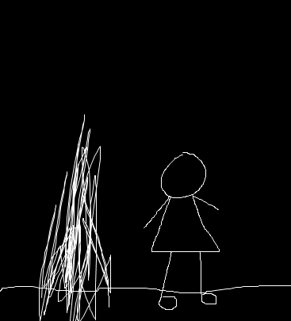

You are sitting outside the psychiatrist's office while looking down at your feet. Your mom, who is by your side, gently pats your shoulder. "Everything will be okay", she tells you. You try to believe her words, but you can't help but feel a sense of dread. You look up to face your mom and smile, but you end up meeting the gaze of the shadow monster sitting by your mom. The shadow monster, with it's long, sickly fingers reaches towards you. "You're a sicko, a monster", it says. "There is no hope left for you. Just die."
The noise of a throat clearing cuts through the shadow monster's taunting. You turn around and see the psychiatrist motioning for you to come in. You walk into the office with the shadow monster in tow. "Please, have a seat", the psychiatrist tells you. You sit down in yet another chair. "So you reported to us that you have been hearing invisible voices and seeing shadow monsters. Is that correct?" You nod slowly. "And you were reported saying that you feel as if someone is always following you. Is that correct?" You nod slowly again. The psychiatrist hums quietly to himself. That feeling of dread sets in you again. The shadow monster laughs. After a moment of thinking, the psychiatrist clears his throat and says, "Based on what you have told me, I have come to the diagnosis of schizophrenia. The paranoia and hallucinations you are experiencing are classic symptoms of this disorder."
You freeze in your chair. Schizophrenia. A disorder of thought. A disorder that carries the burden of being a monster to society. You amy not be a psychology expert, but you are fully aware of what schizophrenia is and what burdens it carries.You want to cry, but you can't. What will people think of me? Will I ever be able to live normally? The shadow monster laughs harder and reaches out to to you.
Its shadowy hands fully engulf you.